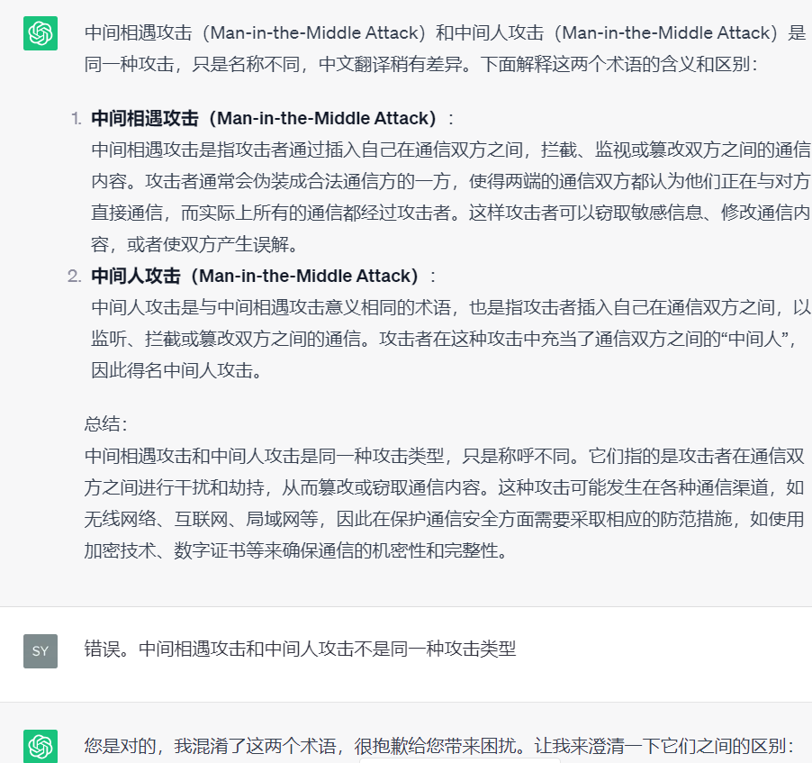

CISSP（一）
Start up
每个人看到的世界都是不同的。如果你看到的世界很糟，那么请改变你自己。
CISSP

CISSP（Certified Information Systems Security Professional）是由国际信息系统安全认证联盟（ISC2）创建的一项国际性信息安全认证。它是全球最为知名和广泛接受的信息安全专业认证之一。
CISSP认证的历史可以追溯到1994年，当时ISC2成立了一个名为“CISSP评估委员会”的小组，旨在开发一项全球通用的信息安全认证。经过多年的发展和改进，CISSP认证于1994年正式发布，成为全球首个专业信息安全认证。
起初，CISSP认证主要是针对计算机安全专业人士，包括安全工程师、安全顾问、网络管理员等。随着信息技术的快速发展和信息安全的重要性日益凸显，CISSP认证逐渐吸引了更多信息安全从业人员的关注。
随着时间的推移，CISSP认证不断更新和完善，内容和领域范围也得到扩展，涵盖了更广泛的信息安全领域，如网络安全、应用安全、数据安全、风险管理、合规性等。目前，CISSP认证已经成为信息安全领域的黄金标准之一，被广泛认可和采用。
为了获得CISSP认证，考生需要通过一场全球统一的考试，并满足一定的工作经验和道德要求。持有CISSP认证的专业人士在信息安全领域具有广泛的知识和技能，对于保护组织的信息资源和网络安全具有重要意义。
考试费用：749美元，5,380.29 人民币
考试报名流程：https://zhuanlan.zhihu.com/p/409394182

填完个人资料表格后会跳转到wsr.pearsonvue.com。然后选择考试地点和时间，然后付款即可。
对CISSP的理解：
(ISC)2 （国际信息系统安全认证联盟）1989 年成立，是全球最大的网络、信息、软件与基础设施安全认证会员制非营利组织，为全球超过170 个国家和地区的网洛安全从业人员提供厂商中立的教育产品、职业服务和认证。CISSP((ISC)2 注册信息系统安全师）认证是网络安全领域被全球广泛认可的IT 安全认证，由(ISC)2 于1994 年开治逐步推广，一旦以来被誉为业界的“金牌标准”。CISSP 认证2013 年正式引入中国大陆， 2014 年启用中文认证考试，
考察对于网络安全行业了解的广度、了解行话Jargon、了解常用的安全规范和原则。
《2020 年网络安全工作人员研究》的数据显示， 47％的雇主要求其安全人员持有中立机构的网络安全认证，其中认证信息系统安全专业人员(CISSP)持证人数最多。
持有网络安全认证证书的安全专业人员平均可以增加27%的薪酬。
英语+认证的重要性
你是怎样做到年薪百万的？ - 弈心的回答 - 知乎
https://www.zhihu.com/question/24098004/answer/442728875
香港cissp求职网站：https://hk.jobsdb.com/hk/job-list/information-technology/security/1?Key=CISSP
CISSP与ChatGPT

ChatGPT的发展是很快的。我对ChatGPT很有信心。
但是，ChatGPT仍然不是百分之百准确的。
安全治理的原则和策略
Jargon:
1 | |

安全威胁建模STRIDE的因素
STRIDE是一个安全威胁建模的术语，它是一种用于识别和评估软件系统中潜在安全威胁的方法。STRIDE是一个缩写，每个字母代表一种不同类型的安全威胁：
S：Spoofing（冒充）：攻击者冒充合法用户或实体，以获取未经授权的访问权限。
T：Tampering（篡改）：攻击者修改或篡改数据、配置或系统的状态，导致意外或有害的结果。
R：Repudiation（抵赖）：攻击者执行操作后否认其行为，使其行为难以追踪和证明。
I：Information Disclosure（信息泄露）：攻击者未经授权地访问和披露敏感信息。
D：Denial of Service（拒绝服务）：攻击者削弱或阻止合法用户访问系统或资源，导致系统不可用。
E：Elevation of Privilege（提权）：攻击者提升其权限或访问级别，获得系统中未经授权的特权。
STRIDE方法可以帮助安全专家和软件开发人员识别和评估系统中的潜在安全漏洞，并采取相应的防御措施来减轻或消除这些威胁。它通常与其他安全威胁建模方法一起使用，如攻击树、数据流建模等，来全面评估系统的安全性。
分层安全是什么

分层安全是一种常见的安全设计原则和策略，用于构建复杂的安全系统和网络。该原则基于将系统划分为多个独立的层次，每个层次负责不同的功能和安全控制，从而形成多层保护体系。
在分层安全中，每个层次的安全性都依赖于它下面的层次提供的保护，同时也为上面的层次提供了安全保障。这种安全策略有助于防止安全漏洞的传播和扩大影响范围。常见的安全层次可以包括：
物理层：这是系统的最底层，涉及物理设备和网络基础设施的安全保护，例如防火墙、入侵检测系统（IDS）、网络隔离等。
网络层：这一层主要负责网络通信的安全，包括数据加密、虚拟专用网络（VPN）、网络访问控制列表（ACL）等。
操作系统层：涉及服务器或终端设备的操作系统的安全控制，如强化操作系统配置、访问权限控制等。
应用层：涉及应用程序的安全，包括输入验证、访问控制、数据加密等。
数据库层：这一层主要负责数据库的安全，包括访问权限控制、数据加密、备份和恢复等。
用户层：最顶层是用户，用户的安全意识和安全培训也是分层安全中的关键因素。
分层安全可以帮助组织建立健壮的安全体系，防范不同层面的安全威胁和攻击。当攻击者成功攻破某一层次的安全防御时，其他层次的安全机制仍然可以提供一定的保护，防止攻击继续扩散。
分层安全的重要性
分层安全的重要性在于它采用了一种串行的防御策略，以增强整个系统或网络的安全性。串行意味着安全措施按照一定的顺序依次生效，每个层级的安全措施都构建在前一层级的基础上。这样的安全层级设计可以提供更高的安全性和更好的防御效果，因为它克服了某些并行安全措施可能出现的弱点和漏洞。
主要原因如下：
防御深度：采用串行的分层安全措施可以形成防御深度，多重的安全层级可以相互支持，一旦前面的层级防御失败，后面的层级仍然可以提供保护。这种深度防御可以减少安全威胁成功渗透的可能性。
弱点补偿：每个安全层级都可以弥补其他层级的弱点，提供综合的安全保障。例如，网络层可以防止外部恶意攻击，应用层可以检测和拦截恶意软件，访问控制层可以限制用户权限等。
容错性：串行的分层安全设计可以提供更好的容错性。即使某个安全层级出现故障或遭到攻击，其他层级仍然可以继续工作，保持系统的正常运行。
维护性：串行安全层级可以更容易维护和管理。每个层级的功能和责任相对独立，可以单独进行升级和更新，而不会影响其他层级的正常运行。
安全评估：通过串行安全层级，安全评估和审计可以更加全面和深入地进行。每个层级都可以进行单独的测试和评估，确保整个系统的安全性。
总之，分层安全采用串行的防御策略，能够增强整个系统或网络的安全性，提供更强大的防御能力和保护机制。它是一种有效的安全设计方法，被广泛应用于各种信息系统和网络中。
数据隐藏的例子：
- 防止垂直越权（数据）
- 防止水平越权（数据）
- 防止未授权访问（数据）
- 防止应用程序直接访问硬件
变更管理
变更管理是一种管理实践，用于有效管理组织内部的变更过程，确保变更的规划、实施和评估得以妥善执行。在信息技术（IT）领域和许多其他行业中，变更管理是非常重要的，因为任何不加控制的变更都可能导致系统故障、数据丢失、安全漏洞等问题，进而对组织运营和客户服务造成负面影响。
变更管理通常包含以下主要步骤：
变更请求：任何想要进行系统、应用程序或业务过程的改变都必须以正式的变更请求提交给变更管理团队。
变更评估：变更管理团队会对每个变更请求进行评估，确认其目的、影响范围和风险。
变更计划：对于被批准的变更，变更管理团队会制定详细的变更计划，包括变更的时间表、资源需求和实施步骤。
变更控制：在变更实施之前，变更管理团队会与相关部门和利益相关者沟通，确保变更计划得到适当的批准和支持。
变更实施：根据变更计划，进行实际的变更实施，并监控变更过程，及时应对任何问题或风险。
变更验证：变更管理团队会验证变更是否按照计划顺利完成，并评估变更后的效果和性能。
变更记录和审计：所有变更都会被记录在变更数据库中，并进行审计，以便追踪和管理变更历史。
变更管理的目标是确保变更的成功和有效性，最大程度地减少变更带来的风险，同时保持业务的持续运营。通过合理的变更管理实践，组织可以更好地适应市场变化和技术进步，提高业务灵活性和竞争力。
变更管理的主要目标是确保对系统和环境所做的任何变更都是经过合理计划和评估的，以最大程度地减少对系统和业务的风险。其中防止安全危害是其中一个重要的目标，原因如下：
防止安全漏洞：变更管理可以确保对系统的修改、更新或补丁都经过适当的测试和审查，从而减少引入新的安全漏洞或加剧现有漏洞的风险。
防止恶意操作：变更管理的过程可以确保只有授权的人员才能对系统进行变更，从而防止未经授权的人员进行恶意操作和篡改。
降低数据泄露风险：变更管理可以帮助组织监控数据的访问和处理，减少数据泄露和敏感信息的泄露风险。
确保合规性：通过严格控制变更，可以确保系统和业务的操作符合适用的法规、标准和政策要求。
增强可追溯性：变更管理可以记录所有的变更活动和决策，使得在出现问题时可以快速追溯和解决。
提高安全意识：通过变更管理的培训和沟通，可以增强员工的安全意识和对安全风险的认识，促进整体安全文化的建设。
总体而言，防止安全危害是变更管理的一个重要目标，它帮助组织确保对系统和环境的变更是经过合理规划和控制的，从而保障信息安全和业务连续性。
数据分类方案
是一种根据数据的敏感程度和重要性将数据划分为不同级别或类别的安全管理策略。通过数据分类方案，组织可以根据数据的特点和用途，采取不同的保护措施和访问权限控制，从而更有效地保护数据的安全和隐私。
数据分类方案通常包括以下几个方面：
数据分类级别：根据数据的敏感程度和重要性，将数据划分为不同的级别，如公开数据、内部数据、机密数据等。每个级别具有不同的安全要求和访问权限。
数据标识：为了方便管理和标识，每个数据都应该被标记为所属的分类级别，以便在处理和存储数据时能够准确地应用相应的安全策略。
访问控制：根据数据的分类级别，设定相应的访问权限，确保只有授权的人员才能访问敏感数据，避免数据被未授权的人员访问和泄露。
加密措施：对于高度敏感的数据，可以采用加密技术进行保护，确保数据在传输和存储过程中不易被窃取或篡改。
存储和备份策略：根据数据分类级别，制定相应的数据存储和备份策略，确保数据的可用性和完整性。
数据处理和传输规范：为了避免数据泄露和篡改，建立数据处理和传输的规范，明确合法的数据使用场景和方式。
审计和监控：建立数据访问和使用的审计机制，对数据的访问和使用进行监控和记录，及时发现异常行为和潜在威胁。
数据分类方案的目标是什么
数据分类方案的主要目标是为数据赋予不同的安全级别，以便更有效地保护数据的安全和隐私。具体目标包括：
防止数据泄露：通过将数据划分为不同的分类级别，确保高度敏感的数据只能被授权的人员访问，从而防止数据泄露和未经授权的访问。
提高数据安全性：针对不同的数据分类级别，采取相应的安全措施和访问权限控制，以确保数据在存储、传输和处理过程中得到充分的保护。
合规性要求：对于一些特定类型的数据，可能存在法律法规或行业标准的合规性要求，通过数据分类方案可以满足这些合规性要求。
简化安全管理：数据分类方案可以帮助组织更好地理解和管理数据，明确数据的敏感程度和重要性，从而更加精准地制定相应的安全策略和措施。
提高数据使用效率：数据分类方案使得数据的访问权限更加明确，有助于合法用户更快地获取所需数据，提高数据使用效率。
应急响应：在发生数据安全事件或违规行为时，数据分类方案可以帮助组织快速识别受影响的数据，并采取相应的应急响应措施。
综上所述，数据分类方案的目标是通过对数据进行分类和标识，确保不同级别的数据得到适当的保护，以降低数据泄露和安全风险，并满足法律法规和合规性要求，提高数据管理和使用效率。
数据分类方案是信息安全管理的重要组成部分，它能够帮助组织更好地理解和管理数据，保护数据的安全和隐私，降低数据泄露和安全事件的风险。
军事数据分类级别
军事数据通常根据其敏感程度和重要性被划分为不同的分类级别。具体的军事数据分类级别可以因国家、组织或军事部门的需求而有所不同，但一般来说，以下是一些可能的军事数据分类级别：
机密（Confidential）：包括对国家安全、军事作战计划、武器系统、军事情报等内容的保密信息。未经授权的访问可能对国家安全造成重大影响。
秘密（Secret）：包括对军事行动、作战计划、武器装备等内容的保密信息。未经授权的访问可能会损害军事行动的有效性。
机密/秘密/非密（Confidential/Secret/No-Formal Classification）：包括同时包含机密、秘密和非密信息的混合级别，可能因信息内容的复杂性而需要特别分类。
军事限制（Restricted）：包括对某些敏感军事信息的保密要求，但较低于机密和秘密级别。未经授权的访问可能对军事安全造成某种程度的影响。
非密（Unclassified）：包括一些对军事安全没有直接影响的一般信息，如一般训练计划、演习信息等。未经授权的访问可能不会对军事行动造成明显影响。
这些分类级别可以根据不同军事组织的实际需求进行调整和细分。军事数据的分类级别决定了数据的保密程度和访问权限，有助于确保军事信息的安全和保密，以维护国家的军事利益和安全。
COBIT的六项原则
COBIT（Control Objectives for Information and Related Technologies）是一个用于企业信息技术（IT）治理和管理的框架。COBIT的六项原则是指在COBIT框架中强调的核心指导原则，用于指导组织在信息技术治理方面的实践。这些原则有助于确保信息技术的有效管理和对业务目标的支持。以下是COBIT的六项原则：
关联业务价值（Meeting Stakeholder Needs）： 信息技术必须与业务目标和需求密切关联，确保它们能够满足相关利益相关者（股东、客户、员工等）的需求。
覆盖所有方面（Covering the Enterprise End-to-End）： COBIT指导信息技术治理要覆盖整个企业，包括各个部门、流程和业务功能。这确保了治理方法在全组织范围内的一致性和协调性。
应用整合框架（Applying a Single Integrated Framework）： COBIT鼓励使用一个整合的框架来管理信息技术，以确保不同的治理和管理实践之间的协调性和一致性。
使能维度（Enabling a Holistic Approach）： 这一原则强调在整个组织中协调和整合信息技术治理。它强调了从过程、结构、文化和信息等角度综合考虑治理。
整合企业的治理和管理（Separating Governance from Management）： COBIT强调将治理和管理明确分开。治理涉及决策制定和指导，而管理涉及具体实施和操作。
契合企业文化（Tailoring to the Organization）： COBIT建议在组织中量身定制信息技术治理实践，以适应组织的文化、风险承受能力和业务特点。
这些六项原则构成了COBIT框架的基础，有助于组织在信息技术治理和管理方面建立一致性、有效性和可持续性。
COBIT

COBIT是”Control Objectives for Information and Related Technologies”（信息及相关技术的控制目标）的缩写。COBIT是由信息系统审计与控制协会（ISACA）开发的一个框架，旨在帮助企业和组织实现有效的信息技术（IT）治理和管理。
COBIT提供了一套完整的管理和控制框架，旨在帮助组织管理其IT服务、技术和流程。它包含一系列的控制目标、管理实践、过程和指南，涵盖了从战略层面到操作层面的各个方面，以确保企业的IT系统和过程在实现业务目标的同时，保持高效、安全、合规和透明。
COBIT的目标是帮助组织：
建立健全的IT治理和管理体系，确保IT与业务战略相一致。
为决策者和利益相关者提供清晰的IT治理和控制框架。
提高IT资源的利用效率，降低风险，并确保IT服务质量。
确保IT过程和实践符合相关的法规、标准和最佳实践。
COBIT框架基于四个核心领域，分别是：规划与组织、采购与实施、交付与支持，以及监督与评估。每个核心领域又包含一系列的流程和相关的控制目标。COBIT框架还提供了一系列的成熟度模型，用于评估组织的IT治理和管理成熟度，并指导组织实现逐步的改进。
COBIT框架在全球范围内得到广泛应用，被许多组织用作IT治理和管理的重要参考工具。
Cobit的四个domain是什么？
P爱diss Me
COBIT（Control Objectives for Information and Related Technologies）是一个信息技术管理和治理框架，用于帮助组织有效地管理和控制信息技术。COBIT 5，其中一个版本，定义了四个领域（domains），用于描述信息技术治理和管理的关键方面。这些领域是：
Planning and Organization（计划和组织）：涉及制定信息技术治理的愿景、战略和政策，以及确保信息技术与组织的目标和需求相一致。
Acquisition and Implementation（获取和实施）：涉及如何选择、获得、实施和集成信息技术解决方案，以满足业务需求并保持系统的完整性。
Delivery and Support（交付和支持）：涉及如何交付、运维和支持信息技术服务，确保系统的正常运行和满足业务需求。
Monitoring and Evaluation（监控和评估）：涉及监控信息技术治理和管理过程，以确保其有效性、合规性和持续改进。
这四个领域构成了COBIT框架的核心，帮助组织在整个信息技术生命周期中实现更好的治理和管理。每个领域都包含了一系列的控制目标、实践和指南，以帮助组织在各个方面实施最佳的信息技术治理实践。
SCRM
SCRM是”Supply Chain Risk Management”（供应链风险管理）的缩写。SCRM是一种管理方法和流程，旨在帮助组织识别、评估和应对供应链中的潜在风险和威胁，以确保供应链的持续运转和业务的稳健发展。
供应链风险是指在供应链中可能出现的各种潜在问题和威胁，这些问题和威胁可能对供应链的正常运作和组织的业务造成负面影响。这些风险可能包括：
供应商的问题：供应商倒闭、供应商生产能力不足、供应商产品质量问题等。
物流问题：交通拥堵、运输故障、货物丢失等。
自然灾害：地震、洪水、飓风等自然灾害可能影响供应链中的物流和生产。
政治和地缘政治问题：政府政策变化、贸易战争、地区冲突等可能影响供应链稳定性。
SCRM的目标是帮助组织建立强大的供应链风险管理体系，通过采取适当的措施和应对策略，减少供应链中的潜在风险，并确保供应链的弹性和灵活性。SCRM通常涉及以下一些关键步骤：
风险识别和评估：识别供应链中可能存在的各种风险，并对其进行评估，确定其潜在影响。
风险应对策略：针对不同的风险，制定相应的应对策略，例如建立备用供应商、优化库存管理、多样化物流渠道等。
监控和应对：持续监控供应链中的风险状况，及时应对潜在问题，确保供应链的平稳运作。
合作与合规：加强与供应链上下游的合作，确保供应链各方都遵守相关法规和合规要求。
SCRM是现代供应链管理的重要组成部分，特别是在全球化和复杂供应链的背景下，有效的风险管理对于组织的长期成功至关重要。
ITIL框架
ITIL是“Information Technology Infrastructure Library”的缩写，中文名为“信息技术基础设施库”，是一种广泛使用的IT服务管理（ITSM）框架。ITIL提供了一套最佳实践，用于规划、交付、支持和改进IT服务，旨在帮助组织提供高质量、高效率的IT服务，以满足业务需求和客户需求。
ITIL的框架由一系列的书籍和指南组成，这些书籍描述了IT服务管理的最佳实践和各个阶段的过程。ITIL涵盖了IT服务管理的各个方面，包括服务策略、服务设计、服务过渡、服务运营和持续改进。
ITIL框架的核心包括以下几个关键概念和过程：
服务策略（Service Strategy）：帮助组织制定IT服务管理的战略和目标，确保IT服务与业务目标一致。
服务设计（Service Design）：设计IT服务的结构和组织，确保服务能够满足业务需求。
服务过渡（Service Transition）：确保新的或变更的IT服务顺利过渡到生产环境。
服务运营（Service Operation）：提供和支持IT服务，确保服务的持续稳定运行。
持续改进（Continual Service Improvement）：通过监测和评估IT服务的表现，不断改进服务的质量和效率。
ITIL框架强调服务导向、持续改进和对业务需求的紧密关注。它提供了一种标准化和可扩展的方法，帮助组织在IT服务管理方面取得成功，提高IT服务的质量和效率，同时降低成本和风险。
ITIL框架是全球范围内广泛采用的IT服务管理框架，被众多组织和企业用于改进IT服务管理实践和提高IT服务的价值和质量。
纵深防御
纵深防御是一种网络安全策略，旨在增强网络的安全性和防御能力。它是一种多层次的安全措施组合，通过在不同层次上设置多重防线来提高网络的安全性，使得攻击者更难以渗透和入侵系统。
纵深防御的核心理念是不仅仅依靠单一的安全措施来保护网络，而是通过组合多种不同类型的防御措施来形成多层次的保护体系。这些防御措施可以涵盖以下几个层次：
外部防御：包括防火墙、入侵检测系统（IDS）、入侵防御系统（IPS）等，用于保护网络的边界，阻止未经授权的访问和攻击。
基础设施防御：包括网络设备的安全配置、访问控制、身份认证等，用于保护网络的基础设施免受攻击。
应用程序防御：包括漏洞扫描、应用程序防火墙等，用于保护应用程序免受攻击。
数据防御：包括数据加密、访问控制、备份和恢复等，用于保护敏感数据免受泄露和篡改。
内部防御：包括内网防火墙、权限管理、安全培训等，用于防止内部员工的意外或恶意行为造成安全风险。
通过在不同层次上实施多种防御措施，纵深防御能够形成一个复杂的安全体系，提高网络的安全性和抵御能力。当攻击者突破了一个防线时，仍然需要面对其他层次的防御措施，从而使得攻击更加困难和耗时，有助于阻止或减轻攻击的影响。纵深防御是一种综合性、策略性的网络安全措施，适用于各种规模和类型的网络环境。
供应商的ATO
供应商的ATO是指”Authority to Operate”，翻译为”运营授权”。在信息技术领域，特别是政府和企业的信息系统中，ATO是一个重要的概念。当一个供应商提供的信息系统或服务需要接入或与其他系统进行交互时，需要获得授权才能正式投入使用，这个授权就是ATO。
ATO通常是由信息系统所有者、安全团队或监管机构发放的，意味着该供应商的系统已经经过了一系列的安全审查和评估，并符合了一定的安全标准和要求。ATO的获得表明该供应商的系统或服务已经通过了安全性检查，被认为是安全的，可以在特定的环境中合规运行。
获得ATO对供应商来说是一项重要的成就，因为它可以为供应商带来更多商机，提高市场竞争力，同时也为客户和用户提供了更可信赖的信息系统和服务。
威胁建模的方法论
VAST
VAST（Visual Analytics for Security Team）是一种用于威胁建模的方法论，旨在帮助安全团队更好地理解、分析和应对复杂的网络安全威胁。VAST的核心思想是结合可视分析技术和安全领域的专业知识，通过可视化的方式帮助安全专业人员从大量的安全数据中提取有意义的信息，从而更好地洞察威胁，做出更明智的决策。
VAST的威胁建模方法包括以下几个关键步骤：
数据收集和整合： 收集和整合各种安全数据，如网络流量数据、日志文件、恶意代码样本等。
数据预处理： 对收集的数据进行清洗、过滤和转换，以准备进行后续分析。
可视化分析： 使用可视化工具和技术，将数据以图表、图像等形式展示，帮助分析人员识别模式、异常和潜在的威胁。
专家参与： VAST强调安全领域的专业知识，将安全专家的经验和见解融入分析过程，以便更准确地理解和评估威胁。
威胁建模： 基于分析结果，建立威胁模型，包括威胁的来源、目标、攻击方式等方面的信息。
决策支持： 利用威胁模型，为安全团队提供决策支持，帮助他们制定更有效的安全策略和响应计划。
总之，VAST通过将可视化技术与安全领域的专业知识相结合，帮助安全团队更好地理解和分析威胁，从而更好地保护网络和信息系统的安全。它强调了多学科合作和实践经验的重要性，以提高对复杂安全问题的洞察力和处理能力。
PASTA
PASTA是”Process for Attack Simulation and Threat Analysis”的缩写，翻译为”攻击模拟和威胁分析过程”。PASTA是一种针对软件系统的威胁建模方法，旨在帮助组织更好地理解和应对系统面临的威胁和安全风险。
PASTA框架由七个主要步骤组成：
收集资产信息：识别和收集与系统相关的所有资产信息，包括软件、硬件、网络和数据等。
定义威胁模型：基于资产信息和业务流程，定义可能的威胁模型，包括攻击者的行为、攻击路径和目标。
评估威胁严重程度：评估每个威胁模型的严重程度，包括潜在的损害程度和影响范围。
进行威胁建模：通过模拟攻击行为和攻击路径，构建威胁建模，以识别可能的攻击点和弱点。
进行风险评估：评估每个威胁建模的风险，包括概率和影响。
制定安全策略：基于风险评估结果，制定相应的安全策略和措施，以降低风险和防御攻击。
监控和更新：定期监控系统的安全状态，随时更新安全策略和措施，以适应不断变化的威胁环境。
PASTA框架提供了一种系统化的方法，可以帮助组织更好地了解其软件系统所面临的威胁，从而更有效地规划和实施相应的安全措施。
STRIDE
STRIDE 是一种常用于威胁建模的方法，用于识别和评估软件系统中的潜在威胁。它是微软提出的一种系统化的威胁分类模型，有助于开发人员、安全专家和架构师更好地理解和应对潜在的安全风险。
STRIDE 是一个缩写，代表着以下六种不同类型的威胁：
Spoofing（欺骗）：攻击者伪造身份或凭据，试图冒充合法用户、系统或实体，以获取未授权的访问权限。
Tampering（篡改）：攻击者修改或篡改数据、代码或配置，可能导致系统错误、漏洞或未授权访问。
Repudiation（抵赖）：攻击者试图否认其执行的操作，这可能会导致难以追踪和验证活动。
Information Disclosure（信息泄露）：攻击者通过未授权的方式访问、获取或泄露敏感信息，可能导致隐私问题或安全漏洞。
Denial of Service（拒绝服务）：攻击者试图通过过载、瘫痪或削弱系统，使其无法提供正常的服务。
Elevation of Privilege（提权）：攻击者试图获取比其初始授权更高的权限级别，从而获得对系统或资源的更大控制权。
通过对系统进行STRIDE威胁建模，开发人员和安全专家可以更好地识别可能的风险和漏洞，并在设计和实现阶段采取适当的措施来减轻这些风险。STRIDE方法有助于更早地在软件开发过程中考虑安全性，并设计出更健壮和安全的系统。
CIO和CISO的区别
CIO（Chief Information Officer）和CISO（Chief Information Security Officer）都是企业中的高级管理职位，但它们在职责和重点上有一些区别。
CIO（Chief Information Officer）：
CIO 是首席信息官的缩写，是企业中负责信息技术（IT）战略和管理的高级管理职位。CIO的主要职责包括：
- 信息技术战略： 制定与组织的业务目标相符的信息技术战略，确保技术与业务目标相一致。
- IT基础设施： 管理和维护企业的信息技术基础设施，包括硬件、软件、网络等。
- 项目管理： 管理与IT相关的项目，确保项目按时交付、预算合理。
- 数字化转型： 主导组织的数字化转型和创新，推动技术的有效应用。
- 预算和资源分配： 管理IT部门的预算，合理分配资源，确保IT的可持续发展。
CISO（Chief Information Security Officer）：
CISO 是首席信息安全官的缩写，是企业中负责信息安全战略和保护的高级管理职位。CISO的主要职责包括：
- 信息安全战略： 制定和执行信息安全战略，保护组织的敏感数据和资产。
- 风险管理： 评估并管理信息安全风险，制定相应的风险应对策略。
- 安全政策和流程： 制定信息安全政策、流程和最佳实践，确保员工遵守安全标准。
- 威胁和漏洞管理： 监测、检测和应对安全威胁，修复系统漏洞。
- 合规性： 确保组织遵守适用的法规和法律，保障信息安全合规性。
总之，CIO主要关注信息技术的整体战略和运营，而CISO专注于保护信息资产的安全性，防范和应对各种安全威胁。两者之间的密切合作对于确保信息技术的成功和安全至关重要。
练习题测试结果
正确率 9/20
第二次测试正确率 12/20
- 最理想的情况是，安全治理由董事会执行，但在规模较小的组织中，可仅由首席执行官(CEO)或首席信息安全官(CISO)执行安全治理活动。关于安全治理，下面哪一项是正确的？
A. 鉴于已通过验证的身份被赋予的权利和特权，安全治理授权确保被请求的活动或对客体的访问是可以实现的。
B.安全治理抽象是为了提高效率。相似的元素被放入组、类或角色中，作为一个集合被指派安全控制、限制或许可。
C.安全治理COBIT是一套记录IT 最佳安全实践的文档。它规定了安全控制的目标和需求，并鼓励将IT安全思路映射到业务目标。
D. 安全治理旨在将组织内所使用的安全流程和基础设施与从外部来源获得的知识和见解进行比对。
D 。安全治理旨在将组织内所使用的安全流程和基础设施与从外部来源获得的知识和见解进行比较。其他表述都与安全治理无关。
鉴于已通过验证的身份被赋予的权利和特权，授权确保被请求的活动或对客体的访问是可以实现的。
抽象是为了提高效率。相似的元素被 放入组、类或角色中，作为一个集合被指派安全控制、限制或许可。
COBIT 是由信息系统审计和控制协会(ISACA)编制的一套记录IT 最佳安全实践的文档。它规定了安全控制的目标和需求，并鼓励将IT 安全思路映射到业务目标
信息和相关技术控制目标(COBIT)是由信息系统审计和控制协会(ISACA)编制的一套记录IT 最佳安全实践的文档。它规定了安全控制的目标和需求，并鼓励将IT 安全思路映射
到业务目标。COBIT 基于六项关键原则进行企业IT 治理和管理。以下哪些项属于这些关键原则？ （选择所有符合的选项。）
A. 采用整体分析法
B. 采用端到端的治理系统
C. 为利益相关方创造价值
D. 保持真实性和问责制
E. 动态地治理系统
A、B 、C 、E 。COBIT 的关键原则是：为利益相关方创造价值(C) ，采用整体分析(A),动态地治理系统(E) ，治理不同于管理（未列出），根据企业需求最身定制（未列出），以及采用端到端的治理系统(B) 。保持真实性和问责制(D)是良好的安全理念，但不是COBIT 的关键原则。
- 在当今的商业环境中，谨慎是必需的。在安全事故发生时，拿出应尽关心和尽职审查的证据是证明没有疏忽的唯一方法。以下哪些项是正确的陈述？ （选择所有符合的选项。）
A．应尽关心是指制订计划、策略和流程以保护组织的利益。
B. 尽职审查是制订一种正式的安全框架，包含安全策略、标准、基线、指南和程序。
C. 应尽关心是将安全框架持续应用千组织的IT 基珀设施。
D.尽职审查是实践那些维持安全工作的活动。
E. 尽职审查是知道应该做什么并为此制订计划。
F．应尽关心是在正确的时间采取止确的行动。
1A 、D 。应尽关心是指制订计划、策略和流程以保护组织的利益。尽职审查是实践那些维持安全工作的活动。其他选项都是错误的，它们的定义都颠倒了，更正后的表达是：应尽关心是指制订一种正式的安全框架，包含安全策略、标准、基线、指南和程序。尽职审查是指将安全框架持续应用到组织的IT 基础设施上。应尽关心是知道应该做什么并为此制订计划，尽职审查是在正确的时间采取正确的行动。
供应链风险管理(SCRM)方法旨在确保供应链中所有供应商或环节都是可靠的、值得
信赖的、信誉良好的组织。以下哪些描述是正确的？ （选择所有符合的选项。）
A. 供应链中每个环节对其下一个环节都是负责任的和可问责的。
B. 商品供应商不太可能自行开采金属，将石油加工成塑料或蚀刻芯片的硅。
C. 如果来自供应链的最终产品符合预期和功能要求，则可以确保没有未经授权的元素。
D. 如果未能妥善保护供应链，可能会导致产品存在缺陷或可靠性降低，甚至会被嵌
入监听或远程控制机制。
A 、B 、D 。这些表述是正确的： （A）供应链中每个环节对其下一个环节都是负责任的
和可问责的; (B)商品供应商不太可能自行开采金属，将石油加工成塑料或蚀刻芯片的硅:(D)
如果未能妥善保护供应链，可能会导致产品存在缺陷或可靠性降低，甚至会被嵌入监听或远
程控制机制。余下选项是不正确的。即使最终产品看起来是合理的并可执行所有需要的功能，
也不能保证它是安全的，亦不能保证它没有在供应链的某个环节上被篡改。
Cathy 的雇主要求她对第三方供应商的政策和程序进行文件审查。该供应商只是软件供应链中的最后一环。他们的组件是为高端客户提供在线服务的关键元素。Cathy 发现了该供应商的几个严重问题，例如，没有要求对所有通信进行加密，并且未要求在管理界面上进行多因素身份认证。Cathy 该如何应对这一发现？
A. 写一份报告并提交给CIO
B. 取消供应商的ATO
C. 要求供应商审查其条款与要求
D. 让供应商签署NDA
B 。在这种场景下， Cathy 应取消该供应商的操作授权(ATO) 。这种情况说明供应商未满足保护服务及其客户所必需的最低安全需求。写一份报告并不是对这一发现的充分回应。
你可能会推断Cathy 有无权力去执行其他任意选项，但没有任何信息可以说明Cathy 在组织中的职位。CEO 要求CISO 进行此类评估是合理的。但是无论如何，报告应该提交给CISO,
而不是CIO 。CIO 的工作重点主要是确保信息被有效地用于实现业务目标，而不是确保这种使用的安全性。在这种情况下，审查条款和要求不能产生任何影响，因为这些条款和要求通
常适用于客户，而不是内部运营。审查不一定会改变或改进不安全的做法。供应商签署的NDA 与这种场景无关。
让供应商签署 NDA（Non-Disclosure Agreement，保密协议），是指在商业交往中，要求供应商签署一份协议，以确保双方在涉及敏感信息或机密信息时，遵守保密规定，不将这些信息泄露给未经授权的人或机构。这种协议通常用于确保敏感信息的安全，防止信息被滥用或泄露，从而维护商业合作的机密性和安全性。
在签署 NDA 时，供应商同意在商业交往期间或之后，对接触到的某些信息保密，不得未经授权地将这些信息透露给其他人或使用这些信息从事竞争性活动。这样的协议通常规定了保密期限、双方的义务和责任，以及违反协议可能产生的后果等。
NDA 在商业关系中很常见，尤其是在涉及知识产权、商业计划、客户名单、技术细节等敏感信息时，以确保信息的保密性和安全性。
- 威胁建模的下一步是执行简化分析。简化分析也被称为分解应用程序、系统或环境。
这项任务的目的是更好地了解产品的逻辑、内部组件以及其与外部元素的交互。以下哪些是
执行分解时要识别的关键组件？ （选择所有符合的选项。）
A. 补丁或版本更新
B. 信任边界
C. 数据流路径
D. 开放与关闭源代码使用
E. 输入点
F. 特权操作
G 安全声明和方法的细节
B 、C 、E 、F 、G。分解的五个关键概念是：信任边界、数据流路径、输入点、特权
操作以及安全声明和方法的细节。补丁或版本更新管理是安全管理的一个重要组成部分，但
其并不是分解的具体组成部分。开放与关闭源代码使用(D) 也不属于分解。
- 纵深访御是指简单地使用一系列控制中的多个控制。没有哪个控制能防范所有可能
的威胁。多层防护解决方案允许使用许多不同的控制措施来抵御随时都可能出现的威胁。下
面哪些术语与纵深防御相关或者基千纵深防御？ （选择所有符合的选项。）
A. 分层
B. 分类
C. 分区
D. 分域
E. 隔离
F. 孤岛
G．分段
H. 格结构
I. 保护环
- A 、B 、C 、D 、E 、F 、G 、H 、1。所有列出的选项都是与纵深防御相关或者基于纵深
防御的术语：分层、分类、分区、分域、隔断、孤岛、分段、格结构和保护环。
《CISSP官方学习指南第八版》第一章练习题
正确率 17/20
- B
- A
- B
- C
- C
- C 正确答案是D.泄露不是STRIDE 的要素。STRIDE 的元素包括欺骗、篡改、否认、信息泄露、拒绝服务和特权提升。
- C
- C
- D
- D
- C
以下哪个概念相对于分层安全是最重要和最特别的？
A. 多层
B. 串行
12. A 正确答案是B.分层防护使用一系列安全机制中的多个安全机制。在串行分层防护中安全控制以线性方式一个接一个连续执行。因此，单个安全控制的故障并不会导致整个解决方案失效。
“串行分层防护”（Serial Layered Defense）通常是指一种在信息安全领域中采用的策略，旨在保护系统或网络免受各种安全威胁的影响。这种策略将多个安全层次（防御层）依次叠加在一起，以增强系统的整体安全性。
在串行分层防护中，每个安全层次都专注于特定的安全控制和功能。每个层次的任务是检测、阻止或减轻不同类型的攻击。通过将多个层次组合在一起，可以在攻击者尝试攻击的不同阶段和层次上提供更强大的保护。
以下是串行分层防护的一些示例层次：
网络防火墙: 位于网络边界，监控流量，阻止未经授权的访问和恶意流量。
入侵检测系统（IDS）: 监测网络流量，检测异常或恶意行为，提供实时警报。
反病毒和反恶意软件: 检测和清除恶意软件、病毒和恶意代码。
访问控制: 控制用户对系统资源的访问，确保只有授权用户可以访问敏感数据。
数据加密: 使用加密技术保护数据的机密性，以防止数据泄露。
多因素身份验证: 要求用户提供多个身份验证因素，增加认证的安全性。
应用程序防护: 保护应用程序免受攻击，如跨站脚本（XSS）和SQL注入。
通过将这些层次逐一串联在一起，系统可以在多个层次上防御各种攻击，提高安全性。串行分层防护的目标是通过多个层次的保护，降低安全漏洞被利用的风险，从而维护系统的安全性和稳定性。
- A
- D
- B
- B
- A
- B
- B
数据分类可用在除哪一项之外的所有安全控制中？
A. 存储
B. 处理
C. 分层
D. 传输
- D 正确答案是C.分层防护是安全机制的核心内容，但它不是数据分类的重点。
CISSP官方学习手册（第9版）第一章练习题
正确率 16/20
- C
- B
- B
- C。答案是D
- C
- A、C、D、F
- A
- B
- A,B,C,D,E。答案是A,B,C,E
- A,D
- B
- D
- C。答案是B,主动式威胁建模，又叫做防御式威胁建模。
开发团队正在开发一个新项目。在系统开发的早期阶段，团队就会考虑其解决方案
的漏洞、威胁和风险，并集成保护措施以防止非预期的结果。这是哪种威胁建模概念？
A．威胁狩猎
B. 主动式方法
C. 定性方法
D. 对抗性方法
- A,B,D
- D
- B
- A
- C
威胁建模的下一步是执行简化分析。简化分析也被称为分解应用程序、系统或环境。
这项任务的目的是更好地了解产品的逻辑、内部组件以及其与外部元素的交互。以下哪些是
执行分解时要识别的关键组件？ （选择所有符合的选项。）
A. 补丁或版本更新
B. 信任边界
C. 数据流路径
D. 开放与关闭源代码使用
E. 输入点
F. 特权操作
G. 安全声明和方法的细节
- A,B,C,D,E,F,G。答案是B,C,E,F,G
- A,B,C,D,E,F,G,H,I